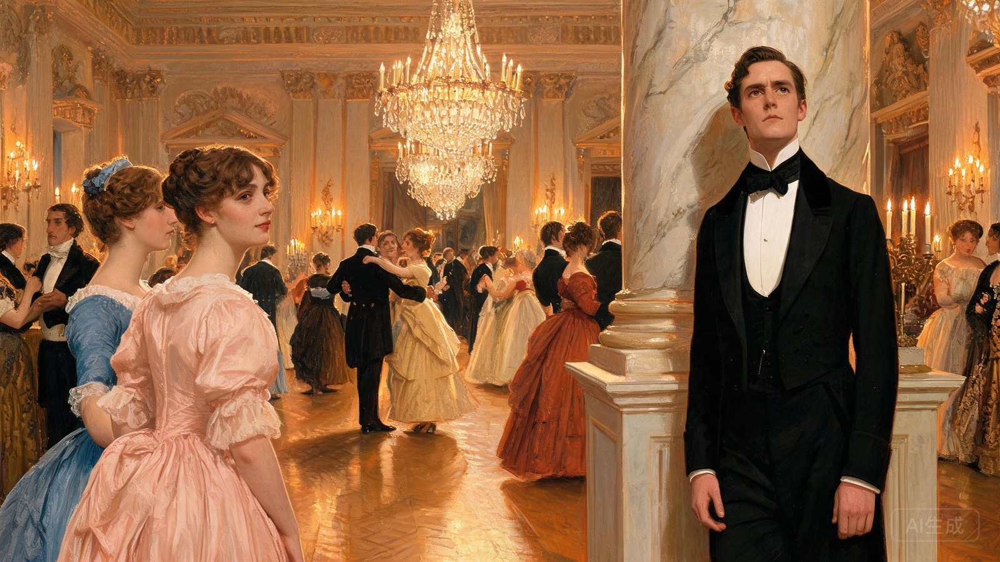
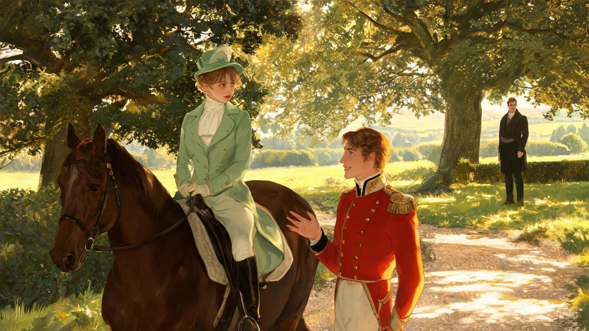

开篇引入
The Opening
动态短视频
字幕文案
世人皆道，富庶单身男子必渴求良缘。
而奥斯汀写下的，从来不止爱情，是傲慢隔绝爱意，偏见蒙蔽真心的人间修行。
A Novel Film Interpretation
「傲慢让别人无法来爱我，偏见让我无法去爱别人」
点击任意处进入
A Novel Film Interpretation
「傲慢让别人无法来爱我，偏见让我无法去爱别人」
Pride & Prejudice
共 8 幕叙事 · 全长 01:42
世人皆道，富庶单身男子必渴求良缘。
而奥斯汀写下的，从来不止爱情，是傲慢隔绝爱意，偏见蒙蔽真心的人间修行。

乡村舞会上，傲慢的达西一句轻评，轻视了伊丽莎白的容貌。
一句无心傲慢，在少女心底，埋下了根深蒂固的偏见。

伊丽莎白听信韦翰的谗言，认为达西自私，破坏他人幸福。
她固守着自己的判断，把所有的误会与离别，都归咎于达西的傲慢。
压抑不住心动的达西冒雨求婚，却换来伊丽莎白激烈的指责与回绝。
一封长信揭开全部真相，她幡然醒悟，原来一直狭隘偏执、错怪良人。
伊丽莎白造访彭伯利庄园，才第一次看见达西温柔善良的本心。
再次相见时，他谦逊温和，彬彬有礼，让伊丽莎白彻底放下了往日的敌意。
小妹私奔酿成家族大祸，所有人束手无策、深陷绝境。
唯有达西匿名出手、倾尽所有，默默替她守住了全家的体面与尊严。
面对门第压迫，伊丽莎白坚守自我、勇敢捍卫自己的心意。
褪去傲慢与偏见的两人双向奔赴，误会散尽，终得圆满相守。
人人皆有傲慢，用骄傲筑起围墙；人人皆有偏见，用主观困住目光。
真正的爱，是让人学会低头、学会看清，学会真诚地拥抱彼此与世界。